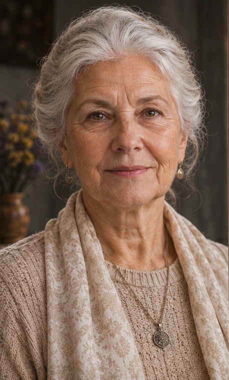

Seer · First Plan
The woman who sees a changing future
Hanna is Grandpa Mykola's wife. She has the gift of prophecy and has seen possible futures for humanity over many years. Her predictions are not fixed: they change as events unfold and people make their choices.
CHARACTER BACKGROUND
A prophecy that changes
Around the turn of the millennium, Mykola met a woman with the gift of prophecy at a church. She spoke of the planet's destruction, but her predictions often changed. Mykola believed her because he understood that prophecies reflected changes in the world rather than a single, unalterable scenario.
They married, and Mykola revealed his secret to her. From then on, they lived together, protecting each other's secrets. When Hanna warned of an approaching major nuclear war, her words coincided with the beginning of new events and the awakening of kharakternyky.
Her vision later changed again. The threat of nuclear war remained, but the future was no longer limited to one inevitable ending: different possibilities had emerged, both hopeful and catastrophic. Mykolai later continued to think of her prophecy, hoping that one day she would see prosperity for humanity instead of its destruction.
Character and behaviour
In the scene at their home, Hanna does not come out to meet a large group. Mykola explains that she dislikes large gatherings, although she is happy to travel with one or two guests. The text has not yet established enough other traits to describe her personality more specifically.